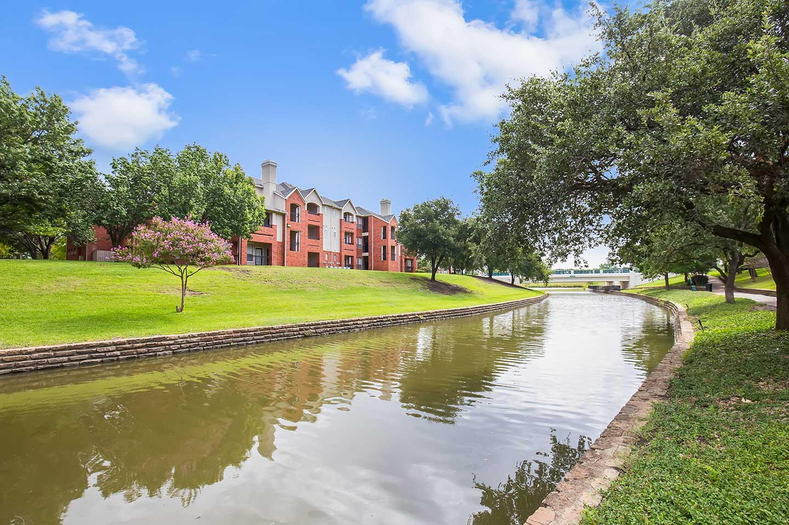

Visit Valley Ranch
Fun Facts
- A "valley" without a valley: The name "Valley Ranch" comes from the fact that the original ranch land sat below a large ridge, giving it the appearance of a valley!
- Valley Ranch has a highly diverse population. For example, some neighborhoods have a higher percentage of residents with Asian and Arab ancestry than nearly any other in the U.S.!
- Valley Ranch formerly hosted the practice facilities of the Dallas Cowboys football team!
About Us
This website is designed to explain the rich history and great culture of our local community, Valley Ranch. You can learn about the great stories situtated here, the events that took place here in the past, learn many fun facts about out community, learn about our community, ask AI any questions you have about our community, and even save your chats by signing up!